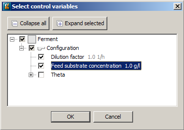
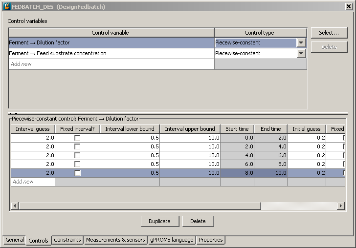

An experiment control is a variable that can be adjusted during an experiment (such as a heating policy in a reactor). Experiment controls therefore form part of the "recipe" for running the experiment. The user can specify the variation in a Variable value using one of three different mechanisms:
Time-invariant controls - provide a single variable value, this quantity will be the same for the duration of the experiment. Appropriate for steady-state and dynamic experiments.
Piecewise constant controls - provide multiple variable values, the quantity holds a different constant value for specified time intervals during the experiment. Appropriate for dynamic experiments only.
Piecewise linear controls - provide multiple variable values, the quantity varies linearly (from a start value to an end value) in a calculated time interval during the experiment. Appropriate for dynamic experiments only.
So when designing an experiment; gPROMS determines the optimal values and profiles for time-invariant, piecewise constant and piecewise linear control variables.
Note that any Variables that are Assigned values in a Process but are not specified as controls in the experiment will retain their Assigned values, whether these are constants or functions of TIME.
In order to define the experiment controls, click on the Controls tab in the Experiments to be designed entity editor and do the following:
Use the Select... button to populate the table using a dialog-based choice which will only display variables that the model developer has chosen to be suitable as control variables. See the section on dialog-based variable choice in Model Validation.

Alternatively, click the <new> cell in the Control variables table at the top of the window and type the full pathname of the gPROMS control variable1NOTE: This variable should be one of those you ASSIGNed in the associated Process entity.If you do not wish to type the pathname you can select the appropriate variable from a drop down list by holding the CTRL key down and hitting the SPACE button on your keyboard. The first time you do this, gPROMS will give you a list of relevant Units and Variables. Select the desired one and then repeat as necessary to drill down to the desired Variable.
The full pathname may be converted to a descriptive name in case the model interface has been configured accordingly. Depending on the chosen application preferences, it may not be possible to edit the table directly.
Choose from the drop down list in the right-hand column whether the control variable is time-invariant, piecewise constant or piecewise linear. Note that if a steady-state experiment has been specified on the general tab then you only have the option to select time-invariant controls.
Repeat the above for each new control variable you wish to use.
Having chosen the format for the time-varying behavior of the control variable, select the relevant control by clicking on it, and then go to the lower part of the window to enter the details of its allowable behavior during the experiment. If one or more piece-wise constant or piece-wise linear controls have been selected then first define the time intervals.: the Control time intervals are synchronised for all piecewise constant and piecewise linear controls and adding or deleting control intervals therefore affects all control variables
Provide an initial guess and bounds on the allowable time duration for each interval
To add another interval enter the value in the <new> row2When you enter the interval duration gPROMS automatically determines the start and end times of that interval, but the relevant cells are greyed out and you cannot edit them.
Time-invariant controls - provide a value together with lower and upper bounds. gPROMS will determine a value between these bounds.
Piece-wise constant controls - for each interval specify an initial guess for the control along with lower and upper bounds; gPROMS will determine a value between these bounds.
Piece-wise linear controls - for each interval gPROMS will determine a starting value for the control and a final value for the control variable - provide an initial guess for the starting and final value of the control along with lower and upper bounds; gPROMS will determine values between these bounds.
Should you wish to duplicate or delete an entire interval, simply select it and click on the Duplicate or Delete buttons at the bottom of the window.

Specifying the bounds on a piecewise constant control profile that is to be optimally determined.